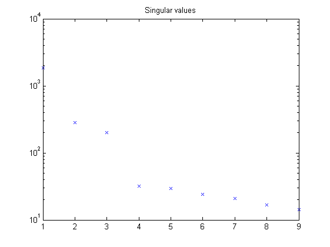

Contents
Example 20: Fourth-order MIMO LPV model
close all; clear; clc;
Fourth-order MIMO Model
n = 4; % The order of the system m = 4; % The number of scheduling parameters r = 2; % The number of inputs l = 3; % The number of outputs % System matrices A1 = [-1.3 -0.6325 -0.1115 0.0596; 1 0 0 0; 0 1 0 0; 0 0 1 0]; A2 = [-0.51 -0.1075 -0.007275 -0.0000625; 1 0 0 0; 0 1 0 0; 0 0 1 0]; A3 = [0.2 0 0 0; 0 0.4 0 0; 0 0 0 0; 0 0 0 0]; A4 = [0 0 0 0; 0 0 0 0; 0 0 0.3 0; 0 0 0 0.3]; B1 = [0 1; 1 0; 1 0; 0 1]; B2 = [0 0; 0 0; 0 0; 0.3 0.3]; B3 = B2; B4 = B2; K = [0.16 0 0; 0 0.16 0; 0 0 0.16; 0.16 0 0]; C = [1 0 0 0; 0 1 0 0; 0 0 1 0]; D = [0 0; 0 0; 0 0]; Alpv = [A1 A2 A3 A4]; Blpv = [B1 B2 B3 B4]; Clpv = [C zeros(l,3*n)]; Dlpv = [D zeros(l,3*r)]; Klpv = [K zeros(n,3*l)];
Open-loop identification experiment
Simulation of the model in open loop
% Measured data from the scheduling parameters N = 1000; % number of data points t = (0:1:(N-1))'; rho = rand(N,1); mu = [ones(N,1) rho 0.5.*sin((2*pi/100).*t).*rho 0.5.*cos((2*pi/100).*t).*rho]; % Measured input data nu = randn(N,1); eta = randn(N,1); xi = randn(N,1); [b,a] = butter(2,0.2); u = [filter([0.75 1.05 0.15],1,eta) + filter(b,a,nu) xi]; % Simulation of the system without noise M = idafflpv(Alpv,Blpv,Clpv,Dlpv,Klpv,[],1); y0 = sim(M,u,t,mu(:,2:end)); % Simulation of the system with noise e = 0.5.*randn(N,l); y = sim(M,u,t,mu(:,2:end),e); disp('Signal to noise ratio (SNR) (open-loop)') snr(y,y0)
Signal to noise ratio (SNR) (open-loop) ans = 19.2396 19.2329 19.2336
Identification of the model in open loop
% Defining a number of constants p = 5; % past window size f = 3; % future window size % LPV identification [S,x] = lordvarx(u,y,mu,f,p,'tikh','gcv',[0 0 0]); x = lmodx(x,n); [Aid,Bid,Cid,Did,Kid] = lx2abcdk(x,u,y,mu,f,p,[0 0 0]); [Aid1,Bid1,Cid1,Did1,Kid1] = lx2abcdk(x,u,y,mu,f,p,[0 0 0],1); figure, semilogy(S,'x'); title('Singular values')
Optimization with the prediction error method
Mi = idafflpv(Aid,Bid,Cid,Did,Kid,[],1); [e,x0] = pe(Mi,u,y,t,mu(:,2:end),'CD'); Mi.x0 = x0; Mi.NoiseVariance = cov(e); Mp = pem(Mi,u,y,t,mu(:,2:end),'CD');
maximum number of iterations has been exceeded
Validation results
% Validation data from the scheduling parameters rho = rand(N,1); mu = [ones(N,1) rho 0.5.*sin((2*pi/100).*t).*rho 0.5.*cos((2*pi/100).*t).*rho]; % Validation data nu = randn(N,1); eta = randn(N,1); xi = randn(N,1); [b,a] = butter(2,0.2); u = [filter([0.75 1.05 0.15],1,eta) + filter(b,a,nu) xi]; % Simulation of the system without noise y0 = sim(M,u,t,mu(:,2:end)); % Simulation of identified LPV system yid = sim(Mi,u,t,mu(:,2:end)); disp('VAF of identified LPV system') vaf(y0,yid) % Simulation of optimized LPV system yid = sim(Mp,u,t,mu(:,2:end)); disp('VAF of optimized LPV system') vaf(y0,yid)
VAF of identified LPV system ans = 99.1401 99.1739 99.1748 VAF of optimized LPV system ans = 99.9826 99.9827 99.9824